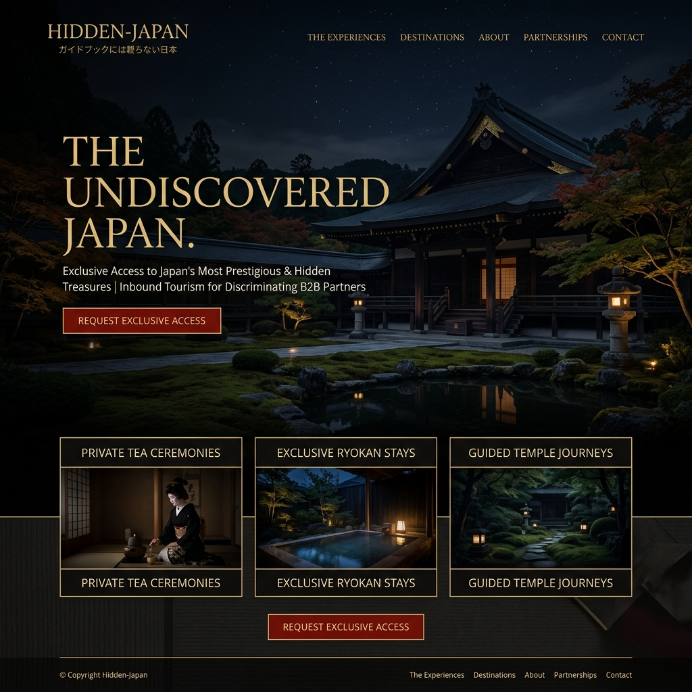

ULTRA-LUXURY TOURISM / INBOUND
ガイドブックには載らない、
ガイドブックには載らない、
最高峰の日本美を。
一見さんお断りの歴史的建造物、非公開の禅寺、そして数百年受け継がれる伝統芸能。超富裕層向けに厳選された、究極のシークレット・エクスペリエンスを提供するB2Bインバウンド・プラットフォーム。

BEYOND SIGHTSEEING
消費される観光から、魂を震わせる体験へ
浅草寺の喧騒や、京都の混雑した道。これらはもはや「真の日本」とは呼べません。世界のエグゼクティブが求めているのは、SNSで消費される景色ではなく、精神的な変容をもたらす深い静寂と、本物の文化的洗礼です。
EXCLUSIVE ACCESS
非公開・招待制の圧倒的なアセット
国宝・重文のプライベート利用
通常は立ち入り禁止の歴史的建造物や夜間拝観を、数名限定の完全プライベート空間として提供。
人間国宝との一対一の対話
陶芸家、能楽師、茶道の家元。各界の頂点に立つ文化人との密室での交流を通して、日本の精神性に触れる。
ヘリコプターを用いた点と点の移動
移動中の摩擦を限りなくゼロに。主要都市から秘境の温泉宿まで、シームレスでプライベートな空路を手配。
AI CONCIERGE
コンシェルジュAIによる究極のパーソナライズ
クライアントの食の好み、過去の旅行先のリズム、美術品への造詣。あらゆるデータに基づき、分刻みで最適化される旅程。しかしAIが表に出ることはありません。すべては専属の熟練バトラーの「気配り」として具現化されます。
PARTNER PLATFORM
B2Bパートナーへの強力なエコシステム
海外の高級コンシェルジュサービス、プライベートバンク、ファミリーオフィス向けにAPIを提供。エンドクライアントの厳しい要望に対して、日本のローカルネットワークを持たずとも、最高の提案と予約実行を可能にします。
MOMENT OF TRUTH
The Experience | 禅宗寺院での夜明け
一切の明かりが消された静寂の仏堂での夜間座禅。夜明けとともに提供される、住職による非公開の茶室での一服。わずか数時間のために数百万円が支払われるこの体験は、彼らの人生観を根本から覆します。
TRUE SUSTAINABILITY
日本の文化遺産を、経済の力で守り抜く
私たちが提供する高単価な体験は、老朽化が進む歴史的建造物の修繕費や、後継者不足に悩む伝統工芸のパトロンとしての役割を果たします。真のエクスクルーシブは、文化の存続に直結するエコシステムなのです。